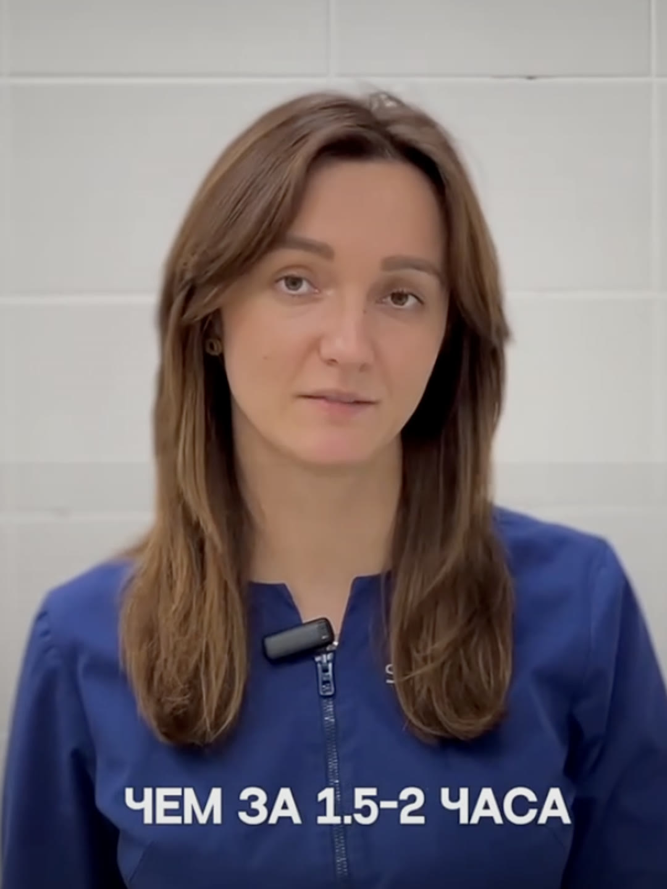
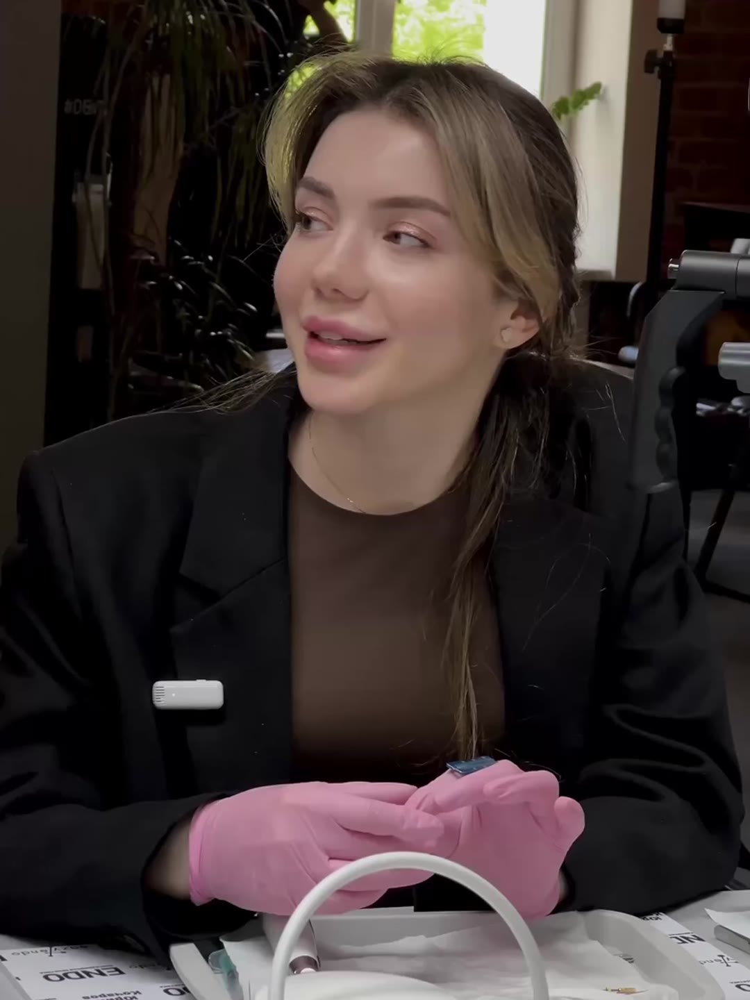
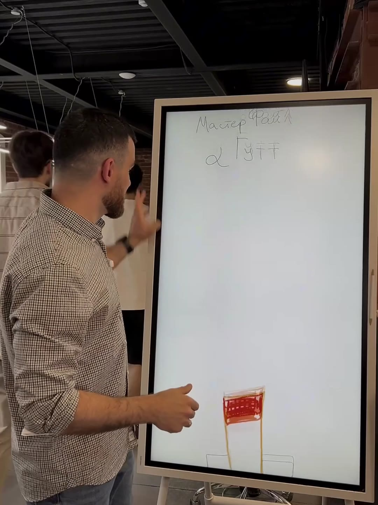
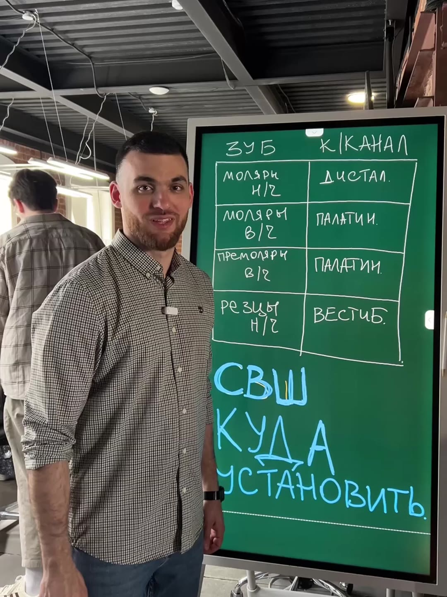
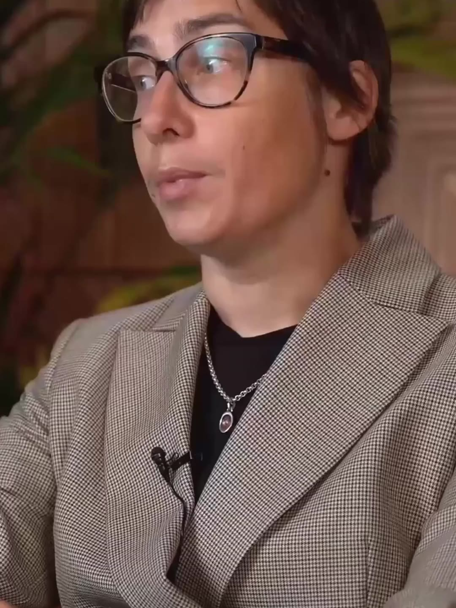
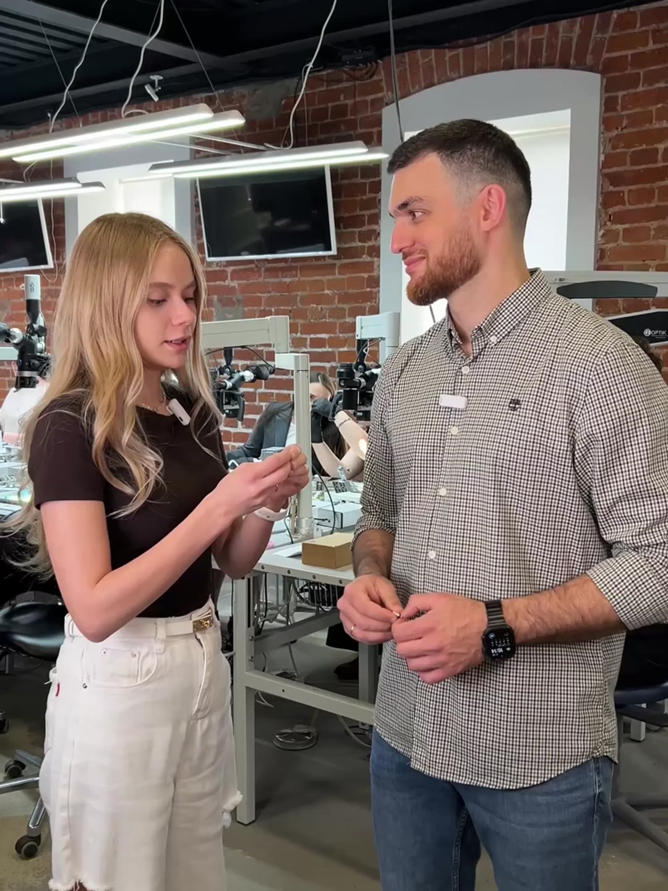
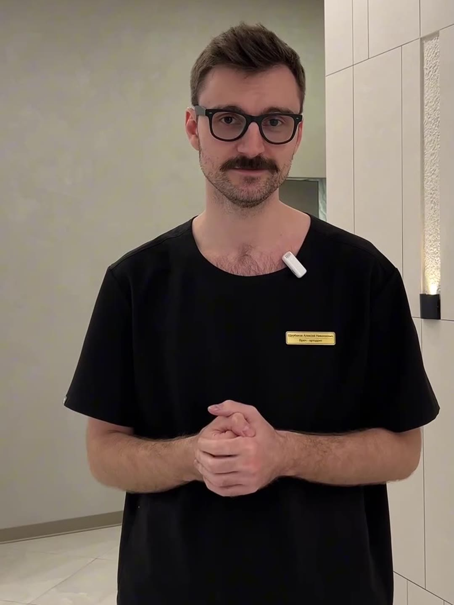
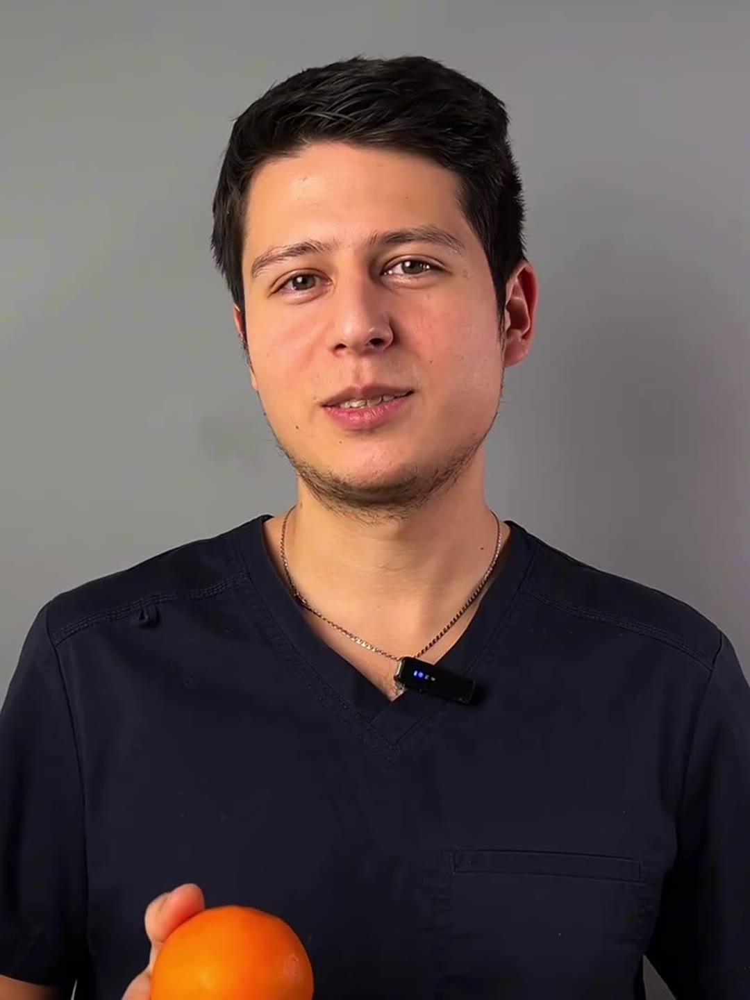

Экспертный контент
Короткие экспертные ролики для врачей и специалистов.

Ролик для косметолога
4
Экспертный ролик для стоматолога
8

Экспертный ролик для стоматолога
10

Экспертный ролик для стоматолога
11

Экспертный ролик для стоматолога
12

Советы перед удалением

Почему Инстасамка захейтила композитные виниры

Александр Афанасьев
Нескучные финансы
Бизнес-мероприятие

Сергей Краснов
Нескучные финансы
Бизнес-мероприятие

Как создать апикальный упор

Как пломбировать корневой канал

Куда ставить СВШ

Курс для психотерапевтов КПТ
Курс для психотерапевтов КПТ
Часть 2

Что делать, если сломал инструмент

Зачем нужен правильный прикус

Что влияет на формирование прикуса у детей

Как понять, что у вас проблемы с суставом

Чувствительность зубов
Стоматолог ортопед

Почему у тебя выпадают волосы
Косметолог